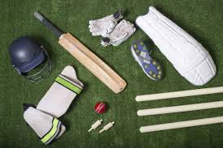

The essence of the sport is that a bowler delivers (i.e., bowls) the ball from his or her end of the pitch towards the batsman who, armed with a bat, is "on strike" at the other end (see next sub-section: Basic gameplay).
The bat is made of wood, usually salix alba (white willow), and has the shape of a blade topped by a cylindrical handle. The blade must not be more than four and one quarter inches (108 mm) wide and the total length of the bat not more than 38 inches (965 mm). There is no standard for the weight, which is usually between 2 lb 7 oz and 3 lb (1.1 and 1.4 kg).[71][72]
The ball is a hard leather-seamed spheroid, with a circumference of 22.9 centimetres (9.0 in). The ball has a "seam": six rows of stitches attaching the leather shell of the ball to the string and cork interior. The seam on a new ball is prominent and helps the bowler propel it in a less predictable manner. During matches, the quality of the ball deteriorates to a point where it is no longer usable; during the course of this deterioration, its behaviour in flight will change and can influence the outcome of the match. Players will, therefore, attempt to modify the ball's behaviour by modifying its physical properties. Polishing the ball and wetting it with sweat or saliva is legal, even when the polishing is deliberately done on one side only to increase the ball's swing through the air, but the acts of rubbing other substances into the ball, scratching the surface or picking at the seam are illegal ball tampering.